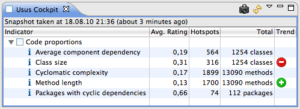
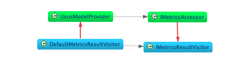
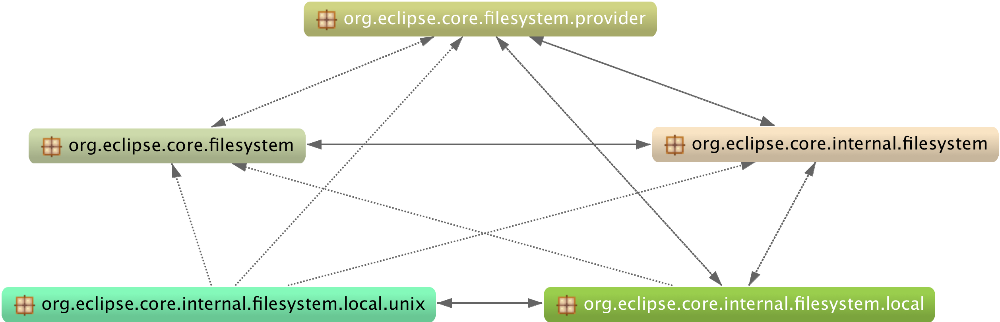
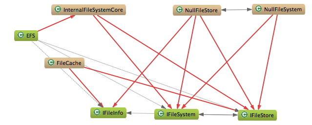

In den letzten Jahren hat sich in der Entwicklergemeinde mehr und mehr ein Bewusstsein für Codequalität bzw. innere Softwarequalität entwickelt. Doch was bedeutet Codequalität eigentlich? Kann man sie messen? Und falls ja, welche Erkenntnisse gewinnt man daraus? Und wenn man Erkenntnisse gewonnen hat, wie reagiert man darauf und was kann man zur Verbesserung unternehmen? Usus versucht eine Antwort auf diese Fragen zu geben.
Jedes Stück Code wird nur einmal geschrieben, aber möglicherweise Hunderte von Malen gelesen und nachvollzogen. Daher ist es sehr effektiv, den Code so zu gestalten, dass das Lesen und Verstehen einfach wird. Dies führt zu weniger Fehlern. Die Änderbarkeit steht als weitere wichtige Eigenschaft des Codes im direkten Zusammenhang mit der Nachvollziehbarkeit: Man sollte nur Code ändern, den man versteht! Usus prüft verschiedene Aspekte des Codes, die in unseren Augen essentiell für eine gute Nachvollziehbarkeit und damit eine leichte Änderbarkeit des Codes sind.
Warum soll ich meinen Code überhaupt ändern? Beim Entwickeln von Software ist die Versuchung groß, sich nicht allzu lange mit dem Aufräumen der Codebasis aufzuhalten. Ausreden dafür lassen sich genug finden. Unsere Erfahrungen aus Legacy-Projekten lehren uns, dass solche Versäumnisse früher oder später zu unwartbarem Code führen.
Warum ein Analysewerkzeug? Analysewerkzeuge unterstützen den Entwickler dabei, Fehler und negative Entwicklungen frühzeitig zu erkennen. So kann man daraus lernen und derartige Probleme im weiteren Verlauf des Projekts vermeiden. Des Weiteren geben Analysewerkzeuge Kriterien dafür vor, was lesbaren und verständlichen Code ausmacht. So gelten für alle Teammitglieder dieselben Regeln und erlauben es ihnen, langfristig ihr Handeln an diesen Kriterien auszurichten.
Wo kann ich weiterlesen? Weitere Informationen zu Refactoring und Clean Code findet man in den Büchern von Fowler [1] bzw. Martin [2]. Die Clean Code Developer-Initiative [3] bietet einen Ansatz, wie man auch im Entwicklungsalltag die Codequalität nicht aus den Augen verliert.
Es gibt viele Code-Analysewerkzeuge, die sich in Eclipse integrieren lassen, wie zum Beispiel Checkstyle [4], FindBugs [5] und PMD [6]. Warum bauen wir also noch ein weiteres derartiges Werkzeug? Bei der Entwicklung waren folgende Aspekte ausschlaggebend:
Es genügt, Usus zu installieren, in die Project Usus Perspektive zu wechseln, die gewünschten Projekte auszuwählen und die initiale Berechnung anzustoßen. Alles weitere geschieht automatisch. Es ist nicht erforderlich, umfangreiche Konfigurationen vorzunehmen oder Detailwissen über die einzusetzenden Metriken zu haben. Abgesehen vom ersten Berechnungslauf, der bei großen Projekten ein paar Minuten in Anspruch nehmen kann, werden Änderungen im Code innerhalb von Sekunden analysiert und sofort in sämtliche Views übernommen: Das Cockpit ändert seine Werte und den Trend, die Hotspots-Listen werden aktualisiert, und die Graphen passen sich an die neuen Gegebenheiten an. Das Cockpit liefert einen komprimierten Überblick über alle Aspekte des gesamten Codes. Möchte man z. B. einen Paketzyklus entfernen, ändert man den Code in den beteiligten Klassen und sieht sofort die Auswirkungen dieser Änderung in den Usus-Views. Da im Usus-Trend Verschlechterungen immer Verbesserungen überdecken, greift dieses Feedback als Frühwarnsystem insbesondere dann, wenn eine beabsichtigte Verbesserung als Seiteneffekt an anderer Stelle etwas verschlechtert. So behält man immer das große Ganze im Blick und verliert sich nicht in Details.
Dieser Abschnitt stellt die wichtigsten Bestandteile von Usus vor.
Cockpit. Das Cockpit (Abb. 2) ist der zentrale View von Usus. Hier erhält man einen Überblick über die berechneten Statistiken und ihre aktuellen Werte. Neben der Gesamtzahl der zugrundeliegenden Elemente (Total) wird die Anzahl derjenigen Elemente mit einer Bewertung größer als 0 (Hotspots), sowie die Gesamtbewertung der Statistik (Level) angezeigt. In der Trend-Spalte wird die Veränderung seit dem letzten Snapshot angezeigt. Snapshots (über den entsprechenden Toolbar-Button) ermöglichen es, Veränderungen im Code sichtbar zu machen. Beispielsweise ist es ratsam einen Snapshot vor einem größeren Refactoring oder vor Beginn eines Implementierungstasks anzulegen.

Abb. 2: Das Usus-Cockpit
Hotspots. Das Motto von Usus lautet "Einsicht und Handeln". Das Cockpit erlaubt zwar Einsicht in den aktuellen Zustand des Codes, aber zum Handeln genügt dies nicht. Deshalb gelangt man von jeder Statistik durch einen Doppelklick zum Hotspots View, der die Elemente mit einer Bewertung größer als 0 anzeigt. Bei dateilokalen Statistiken gelangt man von dort per Doppelklick zum entsprechenden Element im Java Editor, bei Paketzyklen öffnet sich der Package Graph View. Wie im Cockpit kann man auch hier den Trend seit dem letzten Snapshot im Auge behalten.
Trend. Nach diesem Editiervorgang wird der betreffende Hotspot mit einem grünen Pluszeichen markiert, um seine Verbesserung anzuzeigen. Trotzdem kann es sein, dass sich der Gesamttrend der Methodenlängen-Statistik verschlechtert hat, zu erkennen an einem roten Minuszeichen im Cockpit. Dies passiert, wenn neue Hotspots entstanden sind, z. B. beim Extrahieren zu langer Methoden, denn der Gesamttrend wirkt als Frühwarnsystem und verschlechtert sich, sobald sich auch nur ein Hotspot verschlechtert hat. Oder wenn sich die Klassengröße durch das Extrahieren von Methoden verschlechtert hat.
Metriken und Statistiken. In Usus unterscheiden wir zwischen Metriken und Statistiken. Metriken führen eine statische Analyse des vorliegenden Codes durch und extrahieren verschiedene den Code beschreibende Werte, während Statistiken in einem separaten Schritt die Resultate der Metriken zusammenfassen und eine Bewertung ermitteln. Die meisten Statistiken arbeiten linear. So bekommen Elemente mit sehr schlechten Werten eine schlechtere Bewertung als solche, die nur knapp über dem Limit liegen. In den Hotspot-Views werden alle Elemente angezeigt, die eine negative Bewertung haben. Zu jedem Element wird der Wert angezeigt. Das Level errechnet sich aus 100 - Zur Ermittlung des Levels wird der prozentuale Anteil aller Bewertungen an der Gesamtzahl aller Elemente ermittelt, und das Resultat wird von 100 subtrahiert.
Die Usus-Metriken analysieren entweder den Inhalt einer einzelnen Datei oder die Relationen zwischen mehreren Dateien. Daher unterscheiden wir zwischen dateilokalen (D) und relationenzentrierten (R) Metriken. Für jede Metrik geben wir an, zu welcher Kategorie sie gehört.
Methodenlänge (D): Diese Metrik bestimmt die Anzahl der Statements in jedem Methodenrumpf. Dieser Wert ist sehr ähnlich zur Anzahl der Codezeilen, ignoriert aber beispielsweise Leerzeilen, Kommentare und einzelne Klammern. Die zugehörige Statistik bewertet Methoden mit einer Länge von 10 oder mehr mit f(x) = 1/9 x - 1.
Zyklomatische Komplexität (D): Diese Metrik bestimmt die Anzahl der möglichen Verzweigungen im Ausführungspfad durch einen Methodenrumpf. Ein leerer Methodenrumpf hat hierbei eine zyklomatische Komplexität von 1. Jedes Vorkommen eines verzweigenden Sprachelements, z. B. if, while, catch oder die Operatoren && und ||, erhöht diesen Wert um 1. Die zugehörige Statistik bewertet Methoden mit einer zyklomatischen Komplexität von 5 oder mehr mit f(x) = 1/4 x - 1.
Klassengröße (D): Diese Metrik bestimmt die Anzahl von statischen und nichtstatischen Methoden und Initializern in einer Klasse. Die Methodensichtbarkeit wird hierbei nicht berücksichtigt. Die zugehörige Statistik wertet Klassen mit einer Methodenanzahl von 13 oder mehr mit f(x) = 1/12 x - 1.
Average Component Dependency (R): Die hier zugrundeliegende Metrik heißt Cumulative Component Dependency (CCD). Sie ermittelt für jede Klasse, wie viele andere Klassen sie kennt. Die zugehörige Statistik verwendet den durchschnittlichen CCD aller Klassen in Prozent, also die Average Component Dependency (ACD), zur Bestimmung des Levels. Eine Klasse wird als Hotspot betrachtet, wenn ihr CCD einen von der Projektgröße abhängigen Wert überschreitet. Für kleine Projekte ist ein CCD von 15 % noch akzeptabel, während Klassen in großen Projekten einen Wert von 5 % nicht überschreiten sollten.
Paketzyklen (R): Die zugrundeliegende Metrik analysiert die Beziehungen zwischen Klassen. In der Paketzyklen-Statistik werden diese Klassenbeziehungen auf die beteiligten Pakete reduziert und auf Zyklen untersucht. In Abb. 1 sind beispielhaft vier Klassen dargestellt, wobei die gleichfarbigen jeweils im selben Paket liegen. Die Beziehungen zwischen den Klassen bilden keinen Zyklus, auf Paketebene gibt es jedoch eine zyklische Abhängigkeit. Eine solche Abhängigkeit entsteht, wenn Klassen nicht in den richtigen Paketen liegen, und deutet auf Probleme im Design und in der Strukturierung des Projekts hin.

Abb. 1: Paketzyklus
Wir möchten die Arbeit mit Usus anhand eines Beispielprojekts demonstrieren. Um ein Projekt zur Verfügung zu haben, das eine interessante Größe und eine realistische Struktur besitzt, haben wir einen Teil der Eclipse-Sourcen gewählt, und zwar das Platform/Core-Projekt. Dieser Code liegt als Workspace auf der beiliegenden Heft-CD. Da es sich bei den Beispielprojekten selbst um Eclipse-Plugins handelt, benötigt man zum Öffnen des Workspaces eine geeignete Eclipse-Version, zum Beispiel das Eclipse Classic-Paket, mit installiertem Usus [7].
Anhand der Methodenlänge und der Paketzyklen zeigen wir im Folgenden, wie Usus Schwachstellen im Code aufzeigt und wie man diese beheben kann. Um die anderen Metriken bzw. Statistiken zu verbessern, geht man analog vor.
Der Ermittlung der Methodenlänge liegt die Gesamtzahl von 13089 Methoden zugrunde. Von diesen haben 1700 Methoden mehr als 9 Statements, mit einem Level von 86,56. Ein Doppelklick auf die Cockpitzeile öffnet den Hotspots View und zeigt diese Methoden an: Die Methode FrameworkCommandProvider._bundle() ist mit 164 Statements mit Abstand am größten. Per Doppelklick auf diesen Hotspot gelangen wir zur Methode im Java Editor. Durch das Extrahieren von Methoden lässt sich mehr Struktur hineinbringen, Redundanz vermeiden, die Übersichtlichkeit erhöhen und -- quasi als Nebeneffekt -- die Methode kürzen.
Von den 112 analysierten Paketen befinden sich 74 in einem Paketzyklus, was zu einem sehr niedrigen Level von 33,93 führt. Durch Doppelklicken auf die Statistik kann man die betroffenen Pakete in einer Liste sehen, wobei die Größe des zugehörigen Zyklus angegeben ist. Der größte Zyklus enthält 29 Pakete, es gibt weitere Zyklen mit 15, 13 und 5 sowie zweimal 3 und dreimal 2 Paketen. Klickt man doppelt auf ein solches Paket, öffnet sich der Package Graph View mit dem zugehörigen Zyklus.

Abb. 3: Paketzyklus mit 5 Paketen
Betrachten wir zum Beispiel den Zyklus mit 5 Paketen (Abb. 3): Fast alle der Kanten zwischen den Paketen sind bidirektional. Um herauszufinden, welche Klassen für diese Beziehungen verantwortlich sind, kann man Pakete und/oder Beziehungen auswählen und alle damit zusammenhängenden Klassen durch Klicken auf das Klassensymbol im Toolbar im Class Graph anzeigen lassen.

Abb. 4: Klassen aus org.eclipse.core.filesystem und org.eclipse.core.internal.filesystem
Wählen wir beispielsweise die Kante zwischen org.eclipse.core.filesystem und org.eclipse.core.internal.filesystem aus, ergibt sich das Bild in Abb. 4. Hierbei stellen die roten Kanten paketübergreifende Klassenbeziehungen dar, während Beziehungen innerhalb eines Pakets schwarz dargestellt sind. In unserem Beispiel referenziert die öffentliche Klasse EFS interne Klassen, die wiederum Bezug auf öffentliche Interfaces im Paket der Klasse EFS nehmen. Dieser Zyklus lässt sich durch Verschieben der Klasse EFS in ein anderes Paket auflösen.
Betrachtet man größere Paketzyklen, beispielsweise den größten mit 29 Paketen, ist es schwer, auf einen Blick die relevanten Zusammenhänge zu erfassen. Daher kann man einzelne Pakete aus dem View herausfiltern, indem man sie markiert und durch Klick auf das graue Kreuz im Toolbar ausblendet. So lassen sich beliebig viele Pakete in einem oder mehreren Schritten aus der Ansicht entfernen. Zum Aufheben des Filters klickt man auf den Radiergummi.
Bislang haben wir uns darauf konzentriert, den Rechenkern von Usus rund zu machen. Diese Arbeiten stehen nun kurz vor dem Abschluss. Es ist jetzt möglich, Usus mit eigenen (dateilokalen) Statistiken zu erweitern; dazu muss lediglich ein Extension Point benutzt werden. Als nächster Schritt steht die Erweiterbarkeit durch eigene Metriken an.
Darüberhinaus sind weitere Entwicklungen geplant. Interessant wären beispielsweise "Schlammloch"-Hotspots, also solche Stellen im Code, die nach Aggregation mehrerer Einzelmetriken einen besonders großen Bedarf für ein Refactoring aufweisen. Ein Schlammloch ist also ein Ort an dem es sich besonders lohnt aufzuräumen! Außerdem möchten wir mit Usus gezielt nach Code Smells wie z. B. Feature Envy oder Data Classes suchen und an den zugehörigen Hotspots am besten gleich das passende Refactoring anbieten.
Es bleibt spannend! Doch wir können beim Entwickeln von Usus auf Usus vertrauen, viel kann also nicht schief gehen.